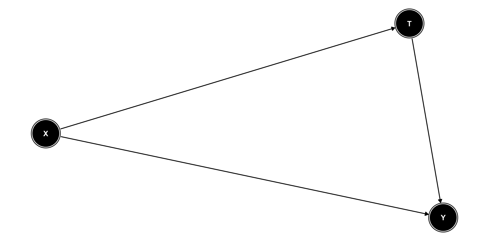

library(dplyr)
library(tidyr)
library(stringr)
library(MatchIt)
library(tableone)
library(data.table)
library(ggplot2)
# Custom functions for this analysis
source('support_functions.R')
# http://insideairbnb.com/get-the-data
msp <- reading_data(url = "http://data.insideairbnb.com/united-states/mn/twin-cities-msa/2022-09-16/data/listings.csv.gz")Taking a Leap of Faith: Association to Causation
Lindsey Dietz, PhD
4/22/23
Disclaimer
The views expressed in this presentation are strictly my own. They do not necessarily represent the position of the Federal Reserve Bank of Minneapolis or the Federal Reserve System.
Who am I?
- Data Science Manager @ Federal Reserve Bank of Minneapolis
- I lead a team working on implementation and analysis of models for stress testing large banks.
- R Enthusiast and STEM diversity advocate
Motivation
Coffee
How many of you drink coffee?
How many of you think it is bad for you?
“The risk of hypertension associated with coffee intake varies according to CYP1A2 genotype. Carriers of slow 1F allele are at increased risk and should thus abstain from coffee, whereas individuals with 1A/1A genotype can safely drink coffee.”
– Journal of Hypertension, August 2009
Coffee
How many of you drink coffee?
How many of you think it is good for you?
“Drinking two to three cups of coffee a day is linked with a longer lifespan and lower risk of cardiovascular disease compared with avoiding coffee.”
– European Journal of Preventive Cardiology, September 2022
Agenda
- Causal Inference Preliminaries
- Matching
- Example using R and Airbnb Data
Association To Causation
- Most researchers want to understand more than just association (a.k.a links, risks, etc.)
- For example,
- Will a new feature increase revenue in my app?
- Does a vaccine prevent the flu?
- Will a regulatory policy change impact bank capital?
Causal Inference
Causal inference is a general set of principles and methods that allow us to make statistical inferences about the causal effects of treatments from randomized and observational data.
Did she just say I can make causal statements about observational data?

Yes, I did, but…
The ‘Leap of Faith’
We must make strong and mostly untestable assumptions about the treatment assignment mechanism to go from descriptive to causal inference for observational data.
Those who can, design experiments!

- Randomized Experiments a.k.a Randomized Controlled Trials (RCTs) or A/B testing are the gold standard for causation.
- However, ethical or logistical reasons may prevent us from using experimentation.
- We cannot force people to do dangerous things.
- If one unit is influenced by another, we cannot parse treatment impacts.
Causal Model
Neyman–Rubin Causal Model
Each unit \(i\) has potential outcomes \(\{Y_{0i}, Y_{1i}\}\) before a treatment decision is made (\(T_i \in \{0,1\}\). We want to understand the treatment effect: \(\tau_i = Y_{1i} - Y_{0i}\).
Fundamental problem of causal inference
However, we cannot observe both potential outcomes for a unit. A counterfactual outcome is what would have been observed if the treatment had been different.
Consistency Assumption

Consistency Assumption
English: Each outcome is observable.
Technical: \(Y_i = Y_{ti}\) if \(T_i = t\) for \(t \in \{0,1\}\). This implies \(Y_i = T_iY_{1i} + (1-T_i)Y_{0i}\).
Why: The process that gets us to the observed outcome is known. This is used in proofs to go from things we cannot observed to things we can observe.
Causal effects of interest
The average treatment effect (ATE) is the average of all treatment potential outcomes less the average of all control potential outcomes.
\[\begin{align} {ATE} &= E[\tau_i] = E[Y_{1i} − Y_{0i}] \end{align}\]The average treatment effect for the treated (ATT) is the ATE for the treated group.
\[\begin{align} {ATT} &= E[\tau_i|T_i = 1] = E[(Y_{1i} − Y_{0i})|T_i = 1] \end{align}\]The key idea in either of these is estimating the counterfactual.
ATE in a Randomized Experiment
Treatment assignment is independent of potential outcomes, i.e. \(Y_{i0}, Y_{i1} \perp T_i\). Thus,
\[\begin{align} E[Y_{1i} - Y_{0i}] & = E[Y_{1i}] - E[Y_{0i}] \\ & = E[Y_{1i}|T_i = 1] - E[Y_{0i}|T_i = 0] \textrm{ by independence}\\ & = E[Y_{i}|T_i = 1] - E[Y_{i}|T_i = 0] \textrm{ by consistency} \end{align}\]Stable Unit Treatment Value Assumption (SUTVA)

Stable Unit Treatment Value Assumption (SUTVA)
English: No interference, i.e. potential outcomes for unit \(i\) are unaffected by the treatment assignment for unit \(j\).
Probabilistic: \(Y_{ti}|Y_{sj} = Y_{ti}\)
Why: This simplifies the missing data problem. Consider if we had to estimate unit \(i\) under every possible case of treatment assignment to any other subject.
Confounders
A confounder (X) is a variable or set of variables that affects both the treatment and the outcome. If we control for confounders, we can still make inferences about the treatment impact on the outcome.
Positivity Assumption

Positivity Assumption
English: Conditional on confounders, every experimental unit has a non-zero chance to be assigned a treatment.
Probabilistic: \(P(T = t | X = x) > 0\).
Why: If some segment of the population has no chance of being assigned a treatment, there is no counterfactual to estimate.
Ignorability Assumption

Ignorability Assumption
English: There are no unmeasured confounders.
Probabilistic: \(Y_{0}, Y_{1} \perp T | X\).
Why: Among those with the same confounders, we can assume the treatment has been randomly assigned.
Propensity Scores & Matching
Propensity Scores
In a randomized experiment, \(P(T=1|X) = P(T=1) = 0.5\).
In most observational data sets, there was no random assignment of the treatment \(P(T=1|X) = f(X)\). However, we can estimate \(f(X)\) with data and assumptions about which \(X\) matter.
- Ex. a unit with predicted propensity score of 0.3 has a 30% chance of receiving treatment.
Once we match on propensity score, we can meet our assumption of Ignorability.
Matching in Practice
- Fit a propensity score model for treatment: \(P(T=1|X) = f(X)\)
- Choice of model for a binary outcome such as logistic regression or machine learning alternatives
- Apply the model to predict a propensity score for each observation.
- Match observations based on a selected algorithm.
- Choice of distance to optimize
- Choice of maximum distance (caliper)
- Use matched outcomes in statistical inference
R Example
Airbnb Listing
Hypothesis
Adding a washer in Minneapolis-St. Paul Airbnb listings will lead to increased revenue per stay
- Treatment: Washer present
- Control: Washer absent
- Unit: Unique listing
- Outcome: Nightly cost
- Plausible Confounders: distance from Minneapolis city center, # of bedrooms, # of bathrooms, type of listing (Private Room vs. Entire home).
Many other confounders are possible.
Setting up libraries and reading data
Data cleaning and review
Code
# Custom function to get top n amenities for simplicity
top40msp <- top_amenities(data = msp, number = 40)
# Custom function to apply filters and pre-processing
analysis_set_msp <- create_analysis_set(
data = msp,
amenities_vector = top40msp,
test_var = 'Washer',
inactive_date = as.Date('2022-04-30'),
room_types = c('Entire home/apt', 'Private room'),
standard_baths = 1:3,
standard_beds = 0:5,
review_lower_bound = 0,
min_nights_upper_bound = 7)
unmatched_tbl <- tableone::CreateTableOne(
vars = c('beds', 'bathroom', 'room_type', 'dist_from_mpls'),
data = analysis_set_msp,
strata = 'Washer',
smd = TRUE,
test = FALSE)
print(unmatched_tbl, smd = TRUE) Stratified by Washer
FALSE TRUE SMD
n 1293 881
beds (mean (SD)) 2.27 (1.27) 2.36 (1.31) 0.064
bathroom (mean (SD)) 1.22 (0.49) 1.32 (0.54) 0.192
room_type = Private room (%) 355 (27.5) 213 (24.2) 0.075
dist_from_mpls (mean (SD)) 0.25 (0.28) 0.20 (0.25) 0.209Standardized Mean Difference (SMD)
SMD is a measure of distance between two group means.
Continuous variables: \(SMD = \frac{\bar{x}_t - \bar{x}_c}{\sqrt{\frac{s_t^2 + s_c^2}{2}}}\)
Binary variables: \(SMD = \frac{\hat{p}_t - \hat{p}_c}{\sqrt{\frac{p_t(1-p_t) + p_c(1-p_c)}{2}}}\)
Heuristic: SMD < 0.1 indicates a negligible difference in the mean or prevalence of a covariate between groups.
Stratified by Washer
FALSE TRUE SMD
n 1293 881
beds (mean (SD)) 2.27 (1.27) 2.36 (1.31) 0.064
bathroom (mean (SD)) 1.22 (0.49) 1.32 (0.54) 0.192
room_type = Private room (%) 355 (27.5) 213 (24.2) 0.075
dist_from_mpls (mean (SD)) 0.25 (0.28) 0.20 (0.25) 0.209Fit a propensity score model
Some variations to consider:
Replace method with one of several others: “nearest” will give nearest neighbor a.k.a greedy matching
Use a caliper to reduce possible distances eligible for matching
Matched outputs
Code
# A tibble: 1,762 × 8
subclass prop_score price Washer beds bathroom room_type dist_from_mpls
<fct> <dbl> <dbl> <lgl> <int> <dbl> <chr> <dbl>
1 1 0.368 58 TRUE 2 1 Private room 0.0915
2 1 0.368 236 FALSE 2 1 Entire home/a… 0.286
3 2 0.436 84 TRUE 1 1 Entire home/a… 0.0358
4 2 0.436 104 FALSE 1 1 Entire home/a… 0.0391
5 3 0.386 82 TRUE 3 1 Entire home/a… 0.155
6 3 0.386 58 FALSE 1 1 Private room 0.0704
7 4 0.307 150 TRUE 5 1 Entire home/a… 0.664
8 4 0.307 55 FALSE 1 1 Private room 0.461
9 5 0.498 43 TRUE 1 2 Private room 0.243
10 5 0.498 89 FALSE 1 2 Private room 0.246
# … with 1,752 more rowsReview balance of matching
Code
Stratified by Washer
FALSE TRUE SMD
n 881 881
beds (mean (SD)) 2.36 (1.32) 2.36 (1.31) 0.001
bathroom (mean (SD)) 1.30 (0.54) 1.32 (0.54) 0.031
room_type = Private room (%) 193 (21.9) 213 (24.2) 0.054
dist_from_mpls (mean (SD)) 0.20 (0.23) 0.20 (0.25) 0.005SMDs are < 0.1 which means we can move forward.
Check positivity assumption
Code
# Positivity assumption checking
# Is there overlap between propensity scores in control and treated?
ggplot2::ggplot(final_match, aes(x = prop_score)) +
geom_density(data = final_match %>%
filter(Washer == TRUE),
aes(x = prop_score, y = ..density..), fill= "#69b3a2") +
geom_density(data = final_match %>%
filter(Washer == FALSE),
aes(x = prop_score, y = -..density..), fill= "#404080") +
theme_minimal() +
xlab('Propensity Score') +
ylab('Density')
Looks good; we have overlap across the distribution.
Run statistical inference
Code
# Vector of prices for Washer (treatment) group
y_trt <- final_match %>%
dplyr::filter(Washer == TRUE) %>%
dplyr::pull(price)
# Vector of prices for Washer (control) group
y_con <- final_match %>%
dplyr::filter(Washer == FALSE) %>%
dplyr::pull(price)
t.test(y_trt, y_con, paired = TRUE,
alternative = 'two.sided',
mu = 0,
var.equal = FALSE,
conf.level = 0.95)
Paired t-test
data: y_trt and y_con
t = 2.186, df = 880, p-value = 0.02908
alternative hypothesis: true mean difference is not equal to 0
95 percent confidence interval:
1.36653 25.38489
sample estimates:
mean difference
13.37571 The end (of the beginning)
Lots of assumptions mean you need to do a lot of robustness testing
Pre-processing filtering
Relevant confounders
Propensity model types
Sample sizes
Thanks for your time!